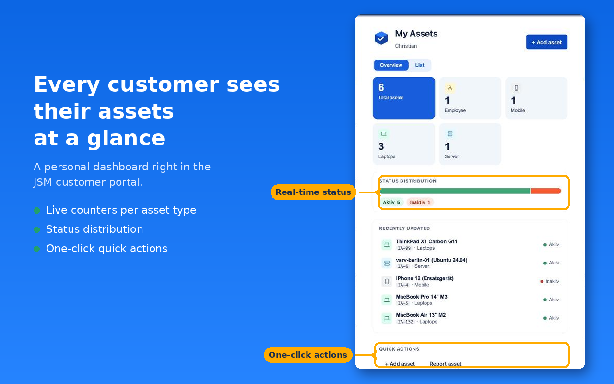
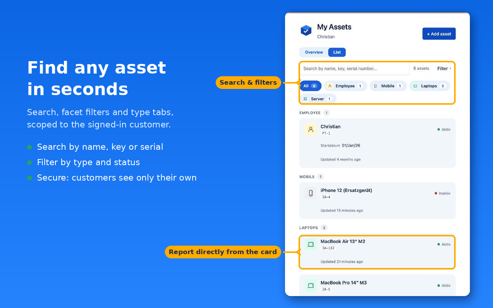
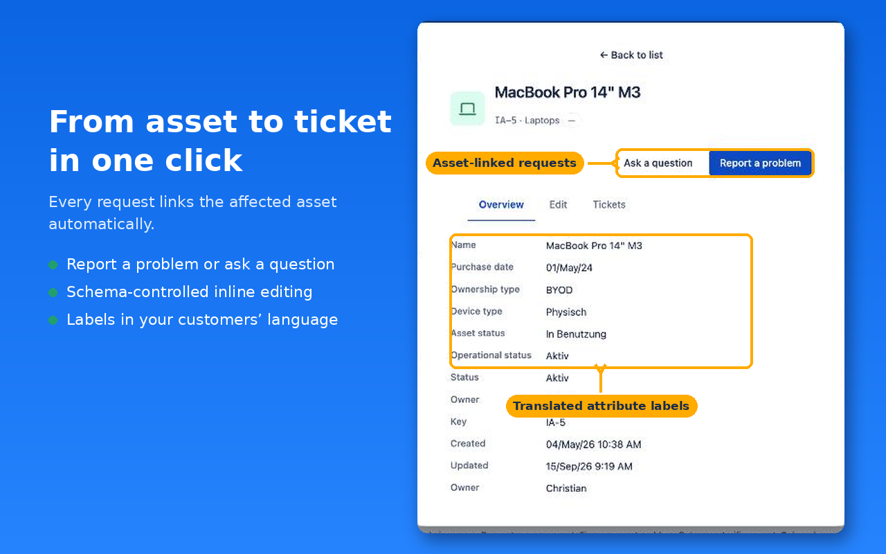
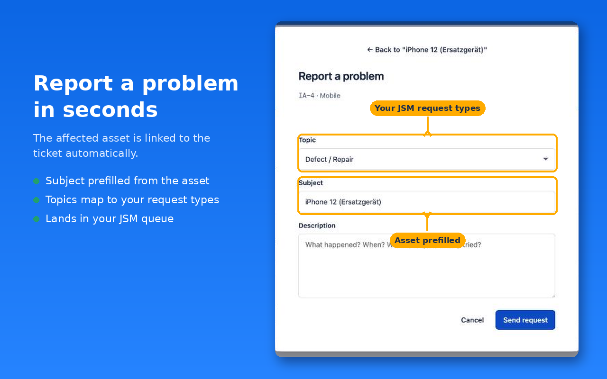

BasicData is an independent software maker from Berlin. We build focused, secure apps for the Atlassian Marketplace. Everything runs on Atlassian Forge, with zero data egress.
View documentation Get in touchJira Service Management has a powerful asset database, but your customers can't see it. Customer Assets for JSM Portal adds a secure self-service view to the customer portal. Customers see, update and report exactly the devices and licenses assigned to them.
Every query is scope-bound server-side to the signed-in customer. The app runs entirely on Atlassian infrastructure. No data ever leaves your site.
Report a problem, register an asset, request a change or ask a question. You decide per object type whether changes apply directly or go through a reviewed ticket. Every ticket links the affected asset.
English and German UI out of the box, plus translatable object-type and attribute names. Customers see everything in their Atlassian profile language.
A 4-step wizard guides you through the setup, with contextual help and a data-flow diagram. One click verifies your Jira asset field end to end.




BasicData is an independent software business based in Berlin, Germany. We think admin tools should explain themselves. Our apps ship with guided setup, built-in checks and honest documentation. Your data stays on your site, by design.
{kind=link}
{kind=link}
{kind=link}
{kind=link}